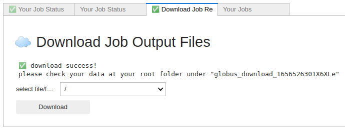

This page provides a crash course in the basics of using CyberGIS-Compute. We will walk through submitting the Hello World job. We have a short glossary at the bottom of the page if some of these terms are unfamiliar to you.
Login to CyberGISX If you don’t already have a CyberGISX account, head over to CyberGISX Hub and setup an account. We recommend using your academic email address if possible. CyberGISX is a JupyterHub platform which is designed for geospatial education and research.
Once you have an account, login to CyberGISX or click the “Launch CyberGISX” button in the top-right corner of the CyberGISX Hub page (the button appears when you are logged in).
Open a New Notebook Once you reach CyberGISX, open a new notebook with the “Python 3” kernel. You can do this by clicking the “Python 3” box under “Notebook” as seen in the screenshot below:
A “notebook” is the main document used in Jupyter. It allows you to mix code with text, visuals, and interactive elements. The “kernel” of a notebook is the thing that runs the notebook, in our case we are running code in Python 3.
Connect to Compute Within CyberGISX, we can connect to CyberGIS-Compute with the following lines of Python code:
The second line creates a “CyberGISCompute” object. Let’s breakdown the arguments we passed in:
url=”cgjobsup.cigi.illinois.edu” - This is the URL of our CyberGIS-Compute Core deployment. We are telling our notebook to talk to it.
isJupyter=True - We are in Jupyter! This tells the SDK to make Jupyter UIs for us.
protocol=”HTTPS” - We are going to talk using HTTPS
port=443 - The server is listening on port 443
suffix=”v2” - We are using the v2 version of Compute
Run the cell when you are ready.
Show the UI Next, we are going to make a cell to bring up the User Interface (UI). This step is very simple, create a new cell and add:
cybergis.show_ui()
When you run this cell, you should see the following User Interface:
Submit our Job On the “Job Configuration” tab, you should see the “Job Templates” dropdown. There, be sure to select “hello_world” from the dropdown. Now, you can submit the job using the “Submit Job” button in the bottom-left.
Note
If you see “⚠️ please select a folder before upload…” when you click the “Submit Job” button, click on the “Upload Data” section. Then click the “Select” button which pulls up a file selector. Choose any folder, then click the “Select” button again. The Hello World job doesn’t actually use the data so the data you upload doesn’t matter.
Your Job Status Once you hit “Submit Job” button, the UI should switch to the “Your Job Status” page like in the screenshot below:
Wait for the job to complete. You’ll know because it will say “your job completed” at the bottom.
A Completed Job When the job is complete, you should see a green check mark and “your job completed” like in the screenshot below:
Let’s breakdown this page a bit:
Your Job is Here! tells us the information on the job including the ID, HPC, etc.
job events (live refresh) gives you information on your job in real-time. The Job ID is the ID CyberGIS-Compute gives to your job and the Slurm ID is the ID that the HPC resource’s SLURM cluster (supercomputer job scheduling) gives to the job. The events table tells you what is happening to your job and when:
JOB_QUEUED means that the job has entered the CyberGIS-Compute Core’s queue of jobs.
JOB_REGISTERED means that the job has been sent to the HPC resource.
GLOBUS_TRANSFER_INIT_SUCCESS means that we are able to transfer any uploaded data to the HPC resource with Globus.
JOB_INIT means that the job has begun running on the HPC resource.
JOB_ENDED means that the job has completed on the HPC resource.
job logs gives you the job logs from SLURM. You can also download the full log (we will look at that in the next step).
Downloading Job Results The next tab in the UI is the “Download Job Results” tab. Go over to it. You can download results from the HPC to CyberGISX using this tab. In the dropdown select “/” and then hit download. When it is done downloading your UI should look like this:

You can use the file browser to find the download folder (specified in the UI, usually “globus_download_xxxxx”). In this folder, you should see the outputs from the Hello World job (empty folders demo_quick_start_*) and the slurm logs for the job (slurm_log/*).
Your Jobs The UI also allows you to access your old jobs! If this is the first time using CyberGIS-Compute, you won’t have any old jobs, but you should still see the job we just ran there. The “Your Jobs” tab looks like the screenshot below:
This allows you to view old jobs and download results from old jobs! To test it out, let’s restart the kernel and run all (in the menu at the top-left click “Kernel” then “Restart Kernel and Run All Cells…”. You’ll notice that the UI no longer has the information for the job we just ran in the “Your Job Status” or “Download Job Result” tabs.
Go to the “Your Jobs” tab and click the “Restore” button for the top job. This should reload the UI with the information for the job!
Congratulations on running your first model with CyberGIS-Compute!
Next Steps
Now that you have a solid understanding of the basics of CyberGIS-Compute, there are a variety of next steps you can take to learn more!
The About page has more detailed information on the creation of CyberGIS-Compute including papers and presentations from conferences discussing it.
The Developing a Model with CyberGIS-Compute page walks through creating a model for CyberGIS-Compute. However, we strongly recommend walking through the IntroToCyberGIS-Compute and ContributingAModel notebooks in the Pysal Access Compute Example first to get some hands-on experience with the anatomy of a model.
CyberGISX: CyberGISX is a JupyterHub which is hosted and maintained by the CyberGIS Center. The JupyterHub is focused on education and research in the geospatial sciences.
Definition
High-Performance Computing (HPC):High-performance computing (HPC) uses supercomputing and computer clusters (many computers working together) to tackle computational problems (analysis/modeling/etc.), with an emphasis on solving “big” problems like big data problems, computationally intensive problems, and problems requiring lots of memory. Put another way, HPC resources can help you tackle computational problems that you can’t tackle with your own computer! HPC resources are also sometimes refered to as cyberinfrastructure which means infrastructure of computers and information systems.
Definition
Jupyter/JupyterHub:Jupyter describes itself as a “web-based interactive development environment for notebooks, code, and data.” Notebooks are the documents created by Jupyter, they are like interactive sets of code which can be mixed with text, visuals, and interactive elements. A JupyterHub is a way to provide Jupyter interfaces to many users.